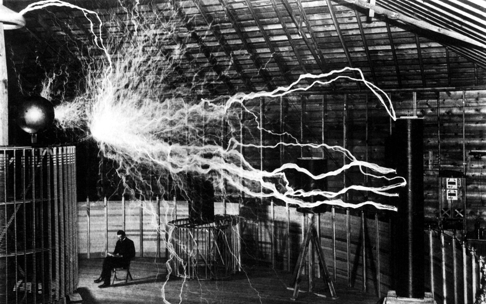

"I don't care that they stole my idea...
I care that they don't have any of their own" - Nikola Tesla

Nikola Tesla, the man who would conduct experiments with light later on in his career, was born during lightning storm.
Brief Introduction
Nikola Tesla was born in 1856 in Smiljan, Croatia, then part of the Austro-Hungarian Empire.
His father was a priest in the Serbian Orthodox church and his mother managed the family’s farm.
In 1863 Tesla’s brother Daniel was killed in a riding accident.
The shock of the loss unsettled the 7-year-old Tesla, who reported seeing visions—the first signs of his lifelong mental illnesses.
Time line of Nikola Tesla's life
1856 - Born in Smiljan
1875 - Tesla Enrolled at Austrian Polytechnic
1882 - Worked for Continental Edison in Paris. He was attempting to improve on electrical equipment sent from the United States
1882 - Tesla identified the rotating magnetic induction field principle. This is used today in alternators
1884 - Moved to United States
1886 - Tesla founded the Tesla Electric Light and Manufacturing Company in Rahway, New Jersey.
He invented and marketed an arc lamp; however, he earned relatively little off of his investment
1891 - Tesla patented the Tesla Coil. The Tesla Coil is a resonant transformer circuit that produced a high voltage,
low current and high frequency alternating current electricity
1901 - Construction began on the Wardenclyffe Tower. Tesla believed that he could transmit electrical energy over long distances wirelessly,
and the tower would illustrate that. The project was never fully completed
1934 - New York Times published Tesla's particle beam research. While he was not financially successful, he continued to be a relatively prominent voice in the scientific community
1943 - On January 7, 1943, as World War II raged, Nikola Tesla died in the hotel he made his home. Upon his death, the U.S. government immediately seized his papers and research
Made by Saros Valeriu for freecodecamp.org responsive web design project.
The content of this website is mostly taken from softschools.
Original credits goes to the respective authors.